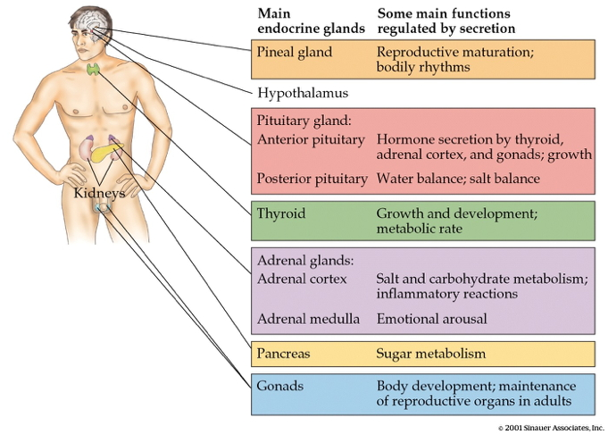

- Wrap-up on monoamines
- Hormones
Today's Topics
Hormones
- Chemicals secreted into blood
- Act on specific target tissues via receptors
- Produce specific effects
Examples of substances that are both hormones and NTs
- Melatonin
- Epinephrine/adrenaline
- Oxytocin
- Vasopressin
Behaviors under hormonal influence
- Ingestive (eating/ drinking)
- Fluid levels
- Na, K, Ca levels
- Digestion
- Blood glucose levels
Behaviors under hormonal influence
- Reproduction
- Sexual Maturation
- Mating
- Birth
- Care giving
Behaviors under hormonal influence
- Responses to threat/ challenge
- Metabolism
- Heart rate, blood pressure
- Digestion
- Arousal
What do these behaviors have in common?
- Biological imperatives
- Proscribed in space and time
- Foraging/hunting
- Find targets distributed in space, evaluate, act upon
- Often involve others
Principles of hormonal action
- Gradual action
- Change intensity or probability of behavior
- Behavior influences/influenced by hormones
- +/- Feedback
- Multiple effects on different tissues
Principles of hormonal action
- Produced in small amounts; released in bursts
- Levels vary daily, seasonally
- or are triggered by specific external/internal events
- Effect cellular metabolism
- Influence only cells with receptors
Differences between neural and hormonal communication
- Point to point vs.“broadcast”
- Wider broadcast than neuromodulators
- Fast vs. slow-acting
- Short-acting vs. long-acting
- Digital (yes-no) vs. analog (graded)
- Voluntary control vs. involuntary
Similarities between neural and hormonal communication
- Chemical messengers stored for later release
- Release follows stimulation
- Action depends on specific receptors
- 2nd messenger systems common
Where are hormones released

Where are hormones released?
- CNS
- Hypothalamus
- Pituitary
- Anterior
- Posterior
- Pineal gland
Where are hormones released
Where are hormones released?
- Rest of body
- Thyroid
- Adrenal (ad=adjacent, renal=kidney) gland
- Adrenal cortex
- Adrenal medulla
- Gonads (testes/ovaries)
Two release systems
- Direct
- Indirect
Direct hormone release into bloodstream
- Hypothalamus (paraventricular, supraoptic nucleus) to
- Posterior pituitary
- Oxytocin
- Arginine Vasopressin (AVP, vasopressin)
Direct release

Indirect release
- Hypothalamus -> releasing hormones
- Anterior pituitary -> tropic hormones
- End organs
Indirect release

Case studies
Case 1: Responses to threat or challenge
- Neural response
- Sympathetic Adrenal Medulla (SAM) response
- Sympathetic NS activation of adrenal medulla, other organs
- Releases NE and Epi

Case 1: Responses to threat or challenge
- Endocrine response
- Hypothalamic Pituitary Adrenal (HPA) axis
- Adrenal hormones released
- Hypothalamus
- Corticotropin Releasing Hormone (CRH)
- Anterior pituitary
- Adrenocorticotropic hormone (ACTH)
Case 1: Responses to threat or challenge
- Adrenal cortex
- Glucocorticoids (e.g., cortisol)
- Mineralocorticoids (e.g. aldosterone)
Adrenal hormones
- Steroids
- Derived from cholesterol
- Cortisol
- increases blood glucose, anti-inflammatory effects
- negative consequences of prolonged exposure
- Aldosterone
- Regulates Na (and water)
Case 2: Reproductive behavior – the milk letdown reflex
- Supraoptic & Paraventricular nucleus (PVN) of hypothalamus releases oxytocin
- Into bloodstream via posterior pituitary (endocrine)
- Onto neurons in nucleus accumbens (neurocrine), amygdala, brainstem
Milk letdown reflex

Oxytocin's role
- Sexual arousal
- Released in bursts during orgasm
- Stimulates uterine, vaginal contraction
- Links to social interaction, bonding (Weisman & Feldman, 2013)
- Alters face processing in autism (Domes et al., 2013)
- May inhibit fear/anxiety-related behaviors by gating amygdala (Viviani et al., 2011)
Oxytocin
.png)
Melatonin
- Diurnal rhythm
- Night time peak, early morning low
- Secretion suppressed by "blue" light (< 460-480 nm)
- Rhythm irregular until ~3 mos post-natal (Ardura, Gutierrez, Andres, & Agapito, 2003)
- Peak weakens, broadens with age

Melatonin circuitry
- Suprachiasmatic nucleus of the hypothalamus
- Paraventricular nucleus of the hypothalamus
- Spinal cord
- Superior cervical ganglion
- Pineal gland
How to think about neurochemical influences
- Measure hormones in blood, saliva; can't effectively measure NTs
- Multivariate, nonlinear, mutually interacting
- Varied time scales
- Phasic (e.g., cortisol in response to challenge)
- Periodic (e.g., melatonin; diurnal cortisol)
How to think about neurochemical influences
- Peripheral effects + neural feedback
- State variables and behavior
- Are your participants sleepy, hungry, horny, distressed…
- Endogenous & exogenous influences

Sarkar, A., et al. (2016). Trends in Neurosciences, 39(11), 763–781.
Next time…
- How the human brain got this way…
References
Ardura, J., Gutierrez, R., Andres, J., & Agapito, T. (2003). Emergence and evolution of the circadian rhythm of melatonin in children. Horm. Res., 59(2), 66–72. https://doi.org/68571
Domes, G., Heinrichs, M., Kumbier, E., Grossmann, A., Hauenstein, K., & Herpertz, S. C. (2013). Effects of intranasal oxytocin on the neural basis of face processing in autism spectrum disorder. Biological Psychiatry, 74(3), 164–171. https://doi.org/http://dx.doi.org/10.1016/j.biopsych.2013.02.007
Ulrich-Lai, Y. M., & Herman, J. P. (2009). Neural regulation of endocrine and autonomic stress responses. Nature Reviews Neuroscience, 10(6), 397–409. https://doi.org/10.1038/nrn2647
Viviani, D., Charlet, A., Burg, E. van den, Robinet, C., Hurni, N., Abatis, M., … Stoop, R. (2011). Oxytocin selectively gates fear responses through distinct outputs from the central amygdala. Science, 333(6038), 104–107. https://doi.org/10.1126/science.1201043
Weisman, O., & Feldman, R. (2013). Oxytocin effects on the human brain: Findings, questions, and future directions. Biological Psychiatry, 74(3), 158–159. https://doi.org/http://dx.doi.org/10.1016/j.biopsych.2013.05.026